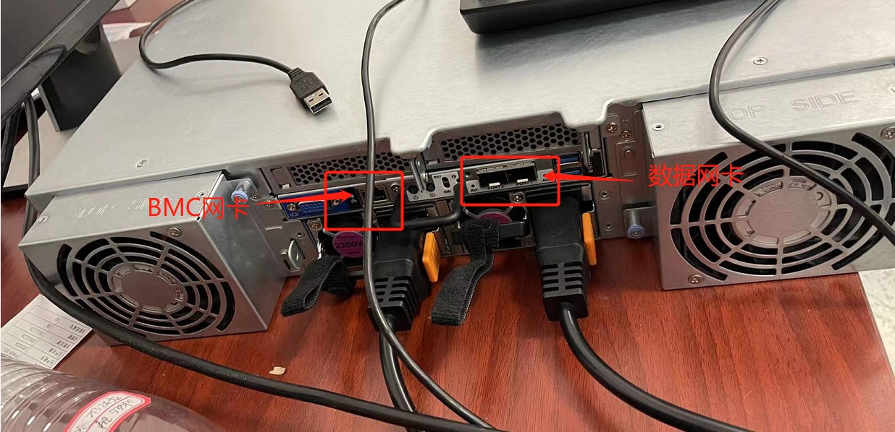

3.5. 智算服务器常见问题¶
3.5.1. SG6服务器有两个网卡，但是有一个电口和两个光口，具体应该怎么连接？¶
答：SG6光口才能实现操作系统联网；电口是BMC管理口，插上网线之后有一个网页可以对服务器进行管理。
3.5.2. SG6-10的BMC密码忘记了，如何重置？¶
答：
通常默认出货默认密码是admin1234 或 password ，如果不对或忘记密码可以按下面步骤进行密码重置；
确认服务器可以联网，已经安装操作系统（以ubuntu系统为例）；
在操作系统下运行sudo apt-get install ipmitool -y 安装ipmitool工具；
在操作系统下运行sudo ipmitool user list 1，查看当前BMC的用户列表；一般我们默认用的是admin用户，查看并记住admin用户的序号；
在操作系统下运行sudo ipmitool user set password 2 admin1234（其中2是需要重置密码的用户的序号，后面的password是你要设置的密码）
此时就可以在电脑通过浏览器访问bmc，用admin用户和重置的密码登陆BMC。
3.5.3. SG6-10的风扇噪音太高，怎样能把噪音降低？¶
答：
首先确认噪音大是否是在启动阶段。服务器在启动过程，未进入操作系统前风扇转速是全速，进入操作系统并加载加速卡驱动后，BMC才能获取到卡的温度，根据加速卡温度进行风扇自动调速；
确认操作系统是否已经安装加速卡的驱动程序。需要安装并加载加速卡的驱动后，BMC才能获取到卡的温度，根据加速卡温度进行风扇自动调速；
确认BMC的风扇策略是否设置正确，需要选择并运行default的风扇策略。确认和设置运行default风扇策略的步骤如下（如已可以登陆BMC WEB管理页面，直接跳至b步骤）： 1) 将服务器的管理网口连上网络。服务器开机启动时会在屏幕左下方显示BMC的IP地址。BMC网口默认是DHCP方式，如果局域网无DHCP服务，则在开机启动时，按DEL进入BIOS设置，在如下界面选择并设置BMC静态IP：
在笔记本或其他电脑用浏览器通过web方式登陆BMC，用户名为admin，密码为admin1234或password:
登陆后，在左侧浏览树选择<设置>，在右侧选择<风扇设定>:
确认目前是否运行的是default风扇策略，如果不是，则按下图点击default策略上的运行标志，运行default风扇策略:
在弹窗的窗口点击<确认>即可运行default风扇策略:
此时风扇是根据服务器内多个温度传感器及加速卡温度进行自动调速的。
3.5.4. SG6-10在配置10张加速卡时，位于CPU后方两个半高PCIE槽位的加速卡温度偏高，如何能调高服务器CPU前部的两个风扇转速？¶
答：运行default风扇策略时，CPU前部的两个风扇转速默认是根据CPU温度、主板温度、硬盘温度来进行调速的，在环境温度太高时可能会出现加速卡温度偏高的情况。可根据下面步骤，设置CPU前部的两个风扇转速。
在笔记本或其他电脑用浏览器通过web方式登陆BMC，用户名为admin，密码为admin1234或password：

登陆后，在左侧浏览树选择<设置>，在右侧选择<风扇设定>：

点击下图default风扇策略的复制标志，新建一个风扇策略：
点击下图红色标记<1>处，新增一个Policy，在<2>处，按下图选择设置：

在下方reference处填0，Duty处填写期望的风扇转速百分比，100为全速。10卡配置时如考虑35度环温，建议设置100：
点击步骤下图的<4>保存：
点击确认：
提示保存成功，点击确认：

点击新增加风扇策略上的运行标志，运行该新增策略：
点击确认，确认运行：
CPU前部的两个风扇转速按设置值或更转速值运行（此两风扇对应区域温度传感器检测到温度偏高时）。